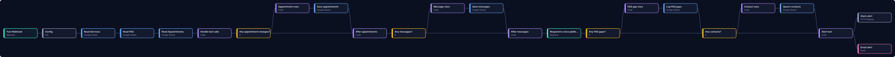

AI front desk: try the booking brain
You're a caller at Maple Street Salon, a made-up business. Pick what to say. Every booking, answer, cancel and hand-off is decided by the real engine from our n8n AI receptionist kit, running right here in your browser. Watch the Google Sheet tabs fill in.
- RealThe decision logic: availability, opening hours, buffers, minimum notice, double-booking refusal, FAQ matching, "only the number that booked can cancel", and staffed-hours escalation. It is the code from the kit's
01 Tool Routerworkflow (v1.0.4), copied unchanged, getting the same request format Vapi sends. - ScriptedThe conversation. In a real deployment an AI voice model (Vapi or Retell) understands the caller and decides which tool to call. Here you pick the caller's lines from buttons, and the receptionist's wording is a fixed template built from the engine's answer.
- SimulatedThe "Google Sheet" and alerts are tables in your browser. Nothing is saved, sent or called. Reload to reset.
- SampleThe salon, its services, prices, FAQ, phone numbers (555 numbers) and the people (Ann Lee, Sam Demo) are fictional.
- This demo has never answered a real phone call. We haven't run a live voice call yet because that needs a paid voice-platform account. No client has used it yet, so there are no client results to show.
The call
The salon's Google Sheet in your browser
In the kit these are tabs of the owner's own Google Sheet. "Alerts" are what would go to the owner by Slack and email.
Last webhook round trip
Request in Vapi's tool-calls format, and the engine's reply.
Things to try
How the real kit is wired from the real workflow files
Five n8n workflows. These diagrams are drawn straight from the shipped .json files (node names, types and connections). Nothing is added for show.

Wide diagram: scroll sideways on a phone.
Test results from the kit's test report
Live check on n8n Cloud with a real Google Sheet and Google Calendar (27 Oct 2026): all 7 tool paths returned the expected results, at about 1.7 to 5.7 seconds per tool call including Google Sheets. A booking created a real Calendar event, and cancelling it deleted the event.
Not tested yet: a real phone call or AI chat (voice quality, speech recognition, how well the AI model follows the prompt). That needs a paid Vapi or Retell account. The kit includes a 10-call go-live checklist for that step.
Get it, or have it set up
AI Front Desk kit for n8n
The 5 workflows, a 7-tab Google Sheet template, Vapi and Retell tool definitions, a setup script, a call simulator, setup guide and test suites. Runs on the owner's own n8n, Google and voice-platform accounts. Voice minutes are billed by the voice platform.
See the kit on GumroadWant it built for your business?
If you found this page through a proposal, reply there. Setup covers your services, hours and FAQ, a test round with you before go-live, and handover of everything to your own accounts.